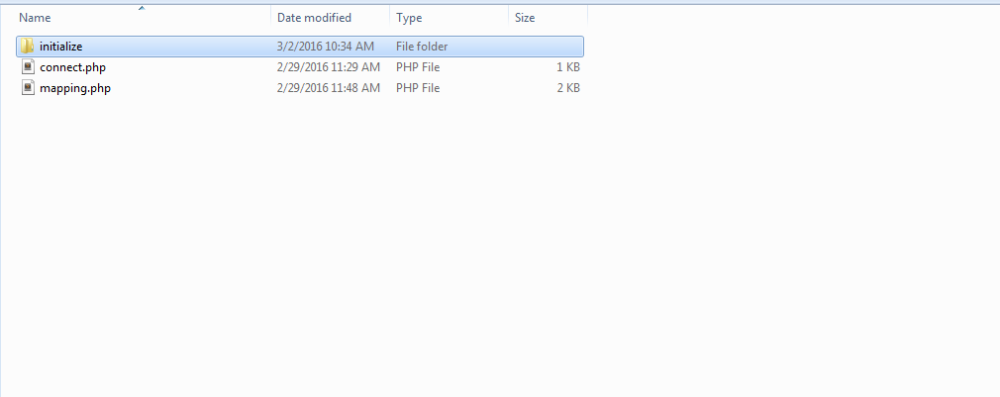
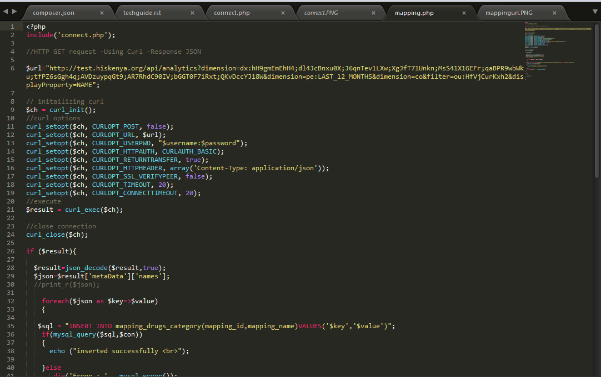

MSH Technical Guide¶
Introduction¶
On a monthly basis, various committees meets to review the stock status of various health commodities in the country, by analyzing data from various sources including:
- Facility and County Level Stock Data from DHIS.
- National Level Stock Status data from the Supply Chain Agencies (Central SOH).
- Pipeline information based on pending shipments per funding agency.
This data is aggregated and analyzed for the different commodities and report generated that indicates to management, the months stock status and pipeline monitoring of the commodities.
Getting Started¶
The purpose of this document is to outline the specific files to be altered database structure to be created, when doing further development on the already developed MSH Commodities Stock Monitoring tool.
The data source include:
- Facility and County Level Stock Data from DHIS.
- National Level Stock Status data from the Supply Chain Agencies (Central SOH).
- Pipeline information based on pending shipments per funding agency.
Prerequisites¶
Before development, one should have sufficient knowledge of the following
- CodeIgniter
- Mysql
- Javascript-Datatables
Note
The snake case naming convention will be used and instead of having the prefix e.g. lab, fp, or malaria, they will be ignored, and the developer will have to adjust accordingly
Importing data from DHIS¶
Inside the root folder, find a folder named **initialize_data**select the program the change will be applied to, i.e malaria, family planning or laboratory. inside it, find a folder named initialize and two files named mapping.php and connect.php

Note
The following two pairs of lines are very important and will be in various files to be stated below
Gets the data elements selected from DHIS, selected from the Y axis of the specific form, of which the system is being developed for, which is actually a dataset report
Inserts the data selected into the database and should be modified accordingly
mapping.php¶
This file fetches various records from DHIS and translates it into human readable form. Some of the data fetched by this are:
Drug IDS
Periods
Quantity received
Data sets
Etc

Note
Inside the initialize folder, find the following files
connect.php¶
Establishes connection to DHIS and to the localhost database
county_level.php¶
Pulls data for the various counties from DHIS, using curl. This Data includes the following:
- County ID
- Drug ID
- Period
- Drug Category ID
- Drug Value
county_level_reporting_rates.php¶
Fetches the reporting rate value and period and county ID for the 47 counties
facility_level.php¶
Pulls data for the various counties from DHIS, using curl. This Data includes the following:
- Drug ID
- Period
- Drug Category ID
- Drug Value
facility_level_reporting rates.php¶
Fetches the reporting rate value and period and county ID for the various facilities
fetch.php¶
Fetches County IDs, from the Counties table
MVC¶
Models get data from the database and pass in on to the Controllers, which in turn passes it on to the Views
report¶
This fetches data from the database. It contains various functions that are also defined at the controller
update stocks¶
This updates records of the stocks of a product already input into the database
Agency¶
This enables one to add, edit, update or delete records partaining to Agencies
User¶
This contains a way to add, edit, update or delete records partaining to users
The following other files have the same functionality as the others listed above
- commodities
- forecast
- mos color codes
- pending shipments
- zone
- pending shipments
- planned shipments
Views¶
The view folder contains files used to render the files developed into the various systems.
Note
The below line of code is required in order to direct the view to the specific controller required and should be modified in all files that it is required
Includes¶
This folder contains the following files:
bottom includes¶
Contains J Query code used in developing charts and graphs
header¶
This files contain the header for lab, malaria and family planning. It contains the following:
- Username of user logged in
- Side navigation bar
- Name of the system logged into